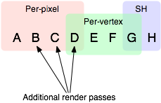

Forward Rendering Path Details
This page describes details of Forward rendering path.
Forward Rendering path renders each object in one or more passes, depending on lights that affect the object. Lights themselves are also treated differently by Forward Rendering, depending on their settings and intensity.
Implementation Details
In Forward Rendering, some number of brightest lights that affect each object are rendered in fully per-pixel lit mode. Then, up to 4 point lights are calculated per-vertex. The other lights are computed as Spherical Harmonics (SH), which is much faster but is only an approximation. Whether a light will be a per-pixel light or not is dependent on this:
- Lights that have their Render Mode set to Not Important are always per-vertex or SH.
- Brightest directional light is always per-pixel.
- Lights that have their Render Mode set to Important are always per-pixel.
- If the above results in less lights than current Pixel Light Count Quality Setting, then more lights are rendered per-pixel, in order of decreasing brightness.
Rendering of each object happens as follows:
- Base Pass applies one per-pixel directional light and all per-vertex/SH lights.
- Other per-pixel lights are rendered in additional passes, one pass for each light.
For example, if there is some object that's affected by a number of lights (a circle in a picture below, affected by lights A to H):

Let's assume lights A to H have the same color and intensity and all of them have Auto rendering mode, so they would be sorted in exactly this order for this object. The brightest lights will be rendered in per-pixel lit mode (A to D), then up to 4 lights in per-vertex lit mode (D to G), and finally the rest of lights in SH (G to H):

Note that light groups overlap; for example last per-pixel light blends into per-vertex lit mode so there are less "light popping" as objects and lights move around.
Base Pass
Base pass renders object with one per-pixel directional light and all SH/vertex lights. This pass also adds any lightmaps, ambient and emissive lighting from the shader. Directional light rendered in this pass can have Shadows. Note that Lightmapped objects do not get illumination from SH lights.
Note that when "OnlyDirectional" pass flag is used in the shader, then the forward base pass only renders main directional light, ambient/lightprobe and lightmaps (SH and vertex lights are not included into pass data).
Additional Passes
Additional passes are rendered for each additional per-pixel light that affect this object. Lights in these passes by default do not have shadows (so in result, Forward Rendering supports one directional light with shadows), unless multi_compile_fwdadd_fullshadows variant shortcut is used.
Performance Considerations
Spherical Harmonics lights are very fast to render. They have a tiny cost on the CPU, and are actually free for the GPU to apply (that is, base pass always computes SH lighting; but due to the way SH lights work, the cost is exactly the same no matter how many SH lights are there).
The downsides of SH lights are:
- They are computed at object's vertices, not pixels. This means they do not support light Cookies or normal maps.
- SH lighting is very low frequency. You can't have sharp lighting transitions with SH lights. They are also only affecting the diffuse lighting (too low frequency for specular highlights).
- SH lighting is not local; point or spot SH lights close to some surface will "look wrong".
In summary, SH lights are often good enough for small dynamic objects.